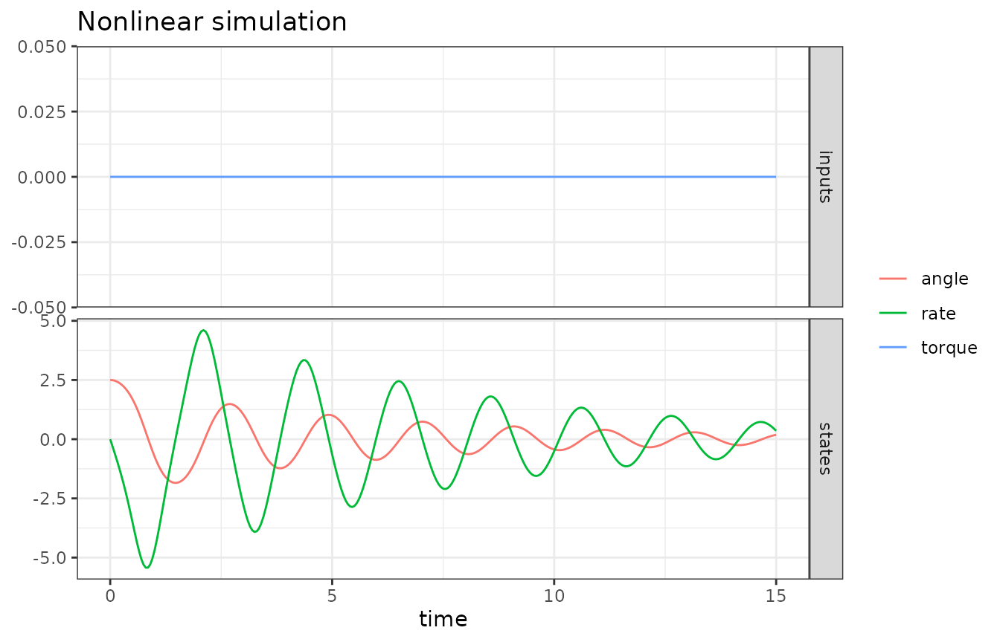
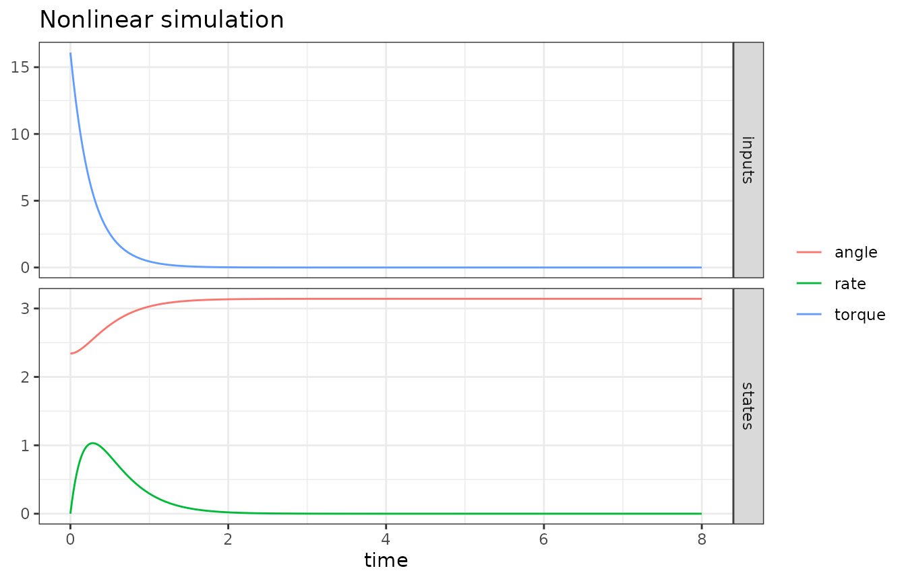
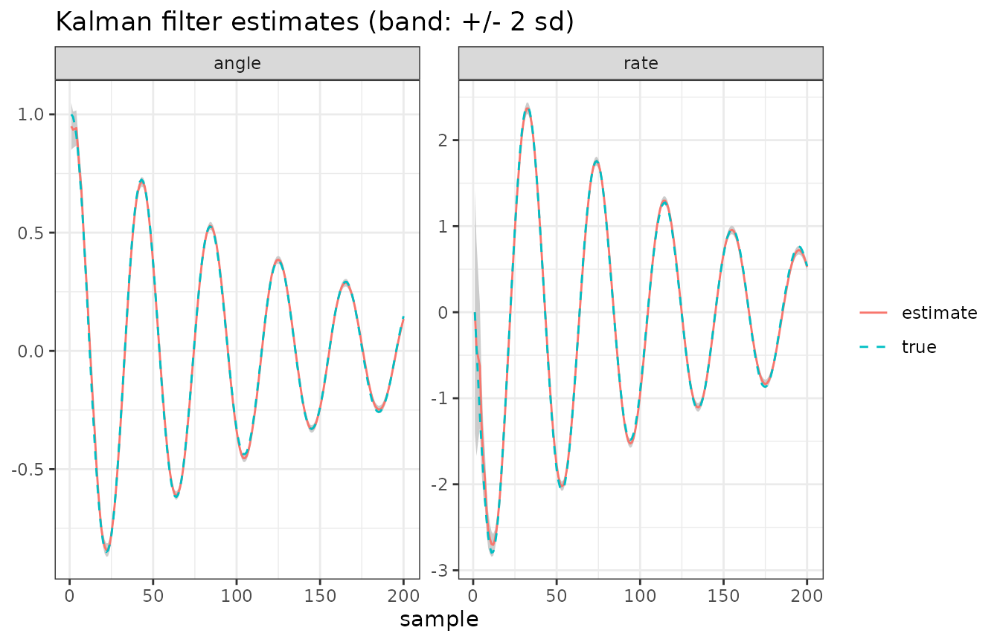
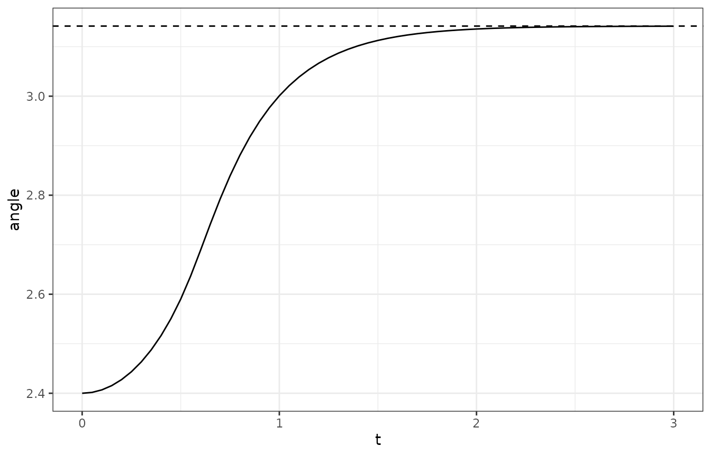
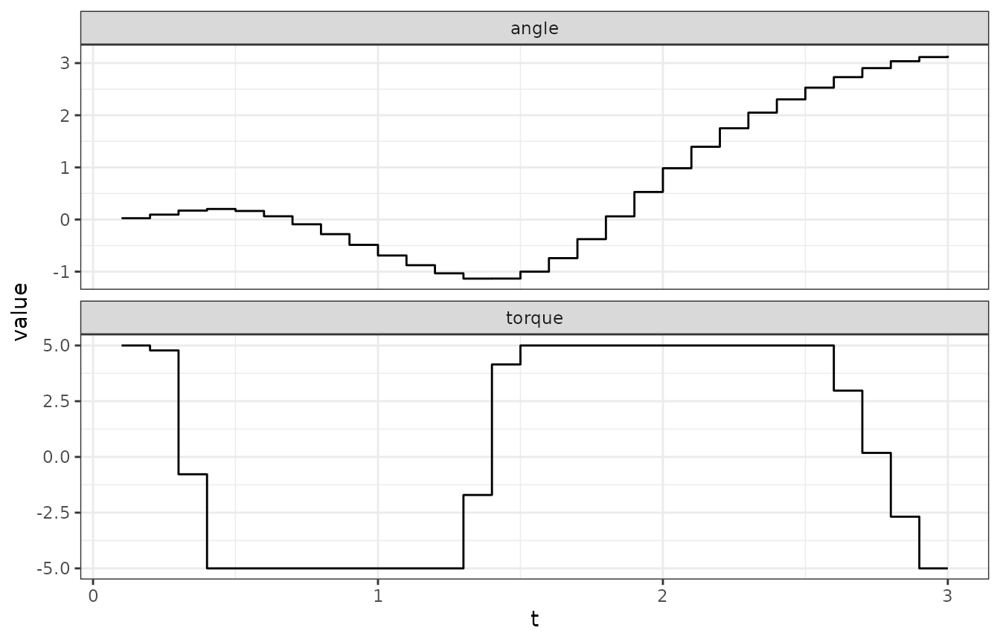

Defining a nonlinear model
A pendulum with damping and a torque input, \ddot\theta = -\frac{g}{l}\sin\theta - c\,\dot\theta + u:
pendulum <- ctrl_nlsys(
update = function(t, x, u, p) c(x[2], -p$g / p$l * sin(x[1]) - p$c * x[2] + u),
output = function(t, x, u, p) x[1],
nstates = 2, ninputs = 1,
params = list(g = 9.81, l = 1, c = 0.3),
state_names = c("angle", "rate"), input_names = "torque",
output_names = "angle"
)
pendulum
#> Nonlinear model (continuous time): 2 states, 1 inputs, 1 outputsupdate returns the derivative for continuous models
(dt = NULL) or the next state for discrete models.
Simulation
Continuous models are integrated with deSolve (adaptive
lsoda by default, tight tolerances). Inputs given as
samples are held constant between time points; a
controller(t, x) is evaluated at the time points and held,
which simulates a sampled-data controller:
free <- ctrl_nl_simulate(pendulum, x0 = c(2.5, 0), times = seq(0, 15, 0.05))
plot(free)
Equilibria and linearization
up <- ctrl_equilibrium(pendulum, x0 = c(3, 0))
up$x
#> [1] 3.141593e+00 -5.329336e-26
up$stability
#> [1] "unstable"
down <- ctrl_equilibrium(pendulum, x0 = c(0.3, 0))
down$stability
#> [1] "locally asymptotically stable"ctrl_linearize() returns the Jacobian model in deviation
variables. The Jacobians come from central finite differences unless
analytic ones are supplied, and the method is recorded:
lin <- ctrl_linearize(pendulum, x0 = c(pi, 0), u0 = 0)
lin$A
#> [,1] [,2]
#> [1,] 0.00 1.0
#> [2,] 9.81 -0.3
attr(lin, "method")
#> [1] "central finite differences"
ctrl_poles(lin)
#> [1] 2.985682+0i -3.285682+0iThe linearization is a first-order statement about a neighborhood of the operating point; its stability verdict is local. An equilibrium whose linearization has poles on the stability boundary is reported as inconclusive, because the nonlinear terms decide.
Stabilizing the upright position
Design LQR on the linearization and apply it to the nonlinear plant in deviation variables:
K <- ctrl_lqr(lin, Q = diag(c(10, 1)), R = 1)$K
ctrl_fb <- function(t, x) -drop(K %*% (x - c(pi, 0)))
for (a0 in c(0.3, 0.8)) {
sim <- ctrl_nl_simulate(pendulum, x0 = c(pi - a0, 0),
times = seq(0, 8, 0.02), controller = ctrl_fb)
cat("initial offset", a0, ": final angle error",
signif(abs(sim$x[nrow(sim$x), 1] - pi), 3), "\n")
}
#> initial offset 0.3 : final angle error 3.03e-11
#> initial offset 0.8 : final angle error 6.74e-11
plot(sim)
The region of attraction of the linear design is limited; large initial errors or input limits need other methods (energy shaping, NMPC).
Discretization
ctrl_nl_discretize() builds a discrete model whose
update integrates the continuous one over a sample with the input held
constant, either with deSolve or with fixed-step classical
Runge-Kutta:
pd <- ctrl_nl_discretize(pendulum, dt = 0.05, method = "rk4")
pd
#> Nonlinear model (discrete time, dt = 0.05): 2 states, 1 inputs, 1 outputsExtended and unscented Kalman filters
set.seed(3)
f <- pd$update
Tn <- 200
x <- c(1, 0)
X <- matrix(0, Tn, 2)
y <- numeric(Tn)
for (k in 1:Tn) {
X[k, ] <- x
y[k] <- x[1] + rnorm(1, sd = 0.05)
x <- f(k - 1, x, 0, pd$params) + rnorm(2, sd = c(1e-3, 5e-3))
}
ekf <- ctrl_ekf(pd, y, u = rep(0, Tn), Qn = diag(c(1e-6, 2.5e-5)), Rn = 0.0025,
x0 = c(0.5, 0), P0 = diag(c(0.5, 0.5)))
ukf <- ctrl_ukf(pd, y, u = rep(0, Tn), Qn = diag(c(1e-6, 2.5e-5)), Rn = 0.0025,
x0 = c(0.5, 0), P0 = diag(c(0.5, 0.5)))
c(ekf = sqrt(mean((ekf$filtered[, 2] - X[, 2])^2)),
ukf = sqrt(mean((ukf$filtered[, 2] - X[, 2])^2)))
#> ekf ukf
#> 0.06018709 0.06038332
c(ekf_mean_nis = mean(ekf$nis), ukf_mean_nis = mean(ukf$nis))
#> ekf_mean_nis ukf_mean_nis
#> 0.9558170 0.9561342
plot(ukf, truth = X)
The EKF linearizes at the current estimate; the UKF propagates sigma points and needs no Jacobians. Both are approximations whose covariances are not guaranteed to be consistent; the mean normalized innovation squared should be near the number of outputs (here 1).
Nonlinear MPC (experimental)
ctrl_nmpc() solves a single-shooting problem with hard
input bounds and soft (penalized) state bounds using L-BFGS-B. Bringing
the pendulum from 2.4 rad to the upright position with limited torque,
far outside the region where the linearization is accurate:
nmpc <- ctrl_nmpc(pd, horizon = 20, Q = diag(c(10, 1)), R = 0.01,
P = diag(c(100, 10)), u_min = -8, u_max = 8)
sim_n <- ctrl_simulate_nmpc(nmpc, x0 = c(2.4, 0), steps = 60,
x_ref = c(pi, 0), on_failure = "hold")
sim_n$failures
#> [1] 0
tail(sim_n$x, 1)
#> angle rate
#> [61,] 3.141344 0.0007897792
df <- data.frame(t = sim_n$time, angle = sim_n$x[, 1])
ggplot2::ggplot(df, ggplot2::aes(t, angle)) + ggplot2::geom_line() +
ggplot2::geom_hline(yintercept = pi, linetype = "dashed") + ggplot2::theme_bw()
ctrl_nmpc_step() solves one step from a given state and
returns the first input, the planned input and state trajectories, the
objective and the optimizer status, for use in a custom loop. The
state-bound penalty must be nonnegative:
step <- ctrl_nmpc_step(nmpc, x = c(2.4, 0), x_ref = c(pi, 0))
step$u
#> [1] 8
c(ok = step$ok, objective = step$objective)
#> ok objective
#> 1.00000 80.49117
dim(step$x_plan)
#> [1] 21 2The problem is nonconvex: the result is a local optimum that depends on the initial guess (started from rest at the bottom, this controller stalls at a local optimum instead of swinging up), and no stability guarantee is provided. The gradient is exact up to the finite-difference stage Jacobians: a backward (adjoint) pass costs O(N(n + m)) model evaluations instead of the O(N^2 m) of differencing the whole cost. Treat NMPC results as experiments, verified by simulation.
Trajectory optimization
Where NMPC stalls, an open-loop plan computed once can succeed.
ctrl_nl_trajopt() finds an input sequence over a fixed
horizon from a given state, here a minimum-effort swing-up from rest at
the bottom to the upright position in three seconds. The terminal state
is an equality constraint, enforced by an augmented Lagrangian method
and reported as terminal_error:
pd10 <- ctrl_nl_discretize(pendulum, dt = 0.1, method = "rk4")
tr <- ctrl_nl_trajopt(pd10, x0 = c(0, 0), horizon = 30, Q = 0, R = 0.01,
x_final = c(pi, 0), u_min = -5, u_max = 5,
terminal_tol = 1e-4)
tr
#> Trajectory optimization: 30 steps, objective 6.346, converged: TRUE
#> terminal error: 3.623e-05
df <- data.frame(t = rep(tr$time[-1], 2),
value = c(tr$x[-1, 1], tr$u[, 1]),
series = rep(c("angle", "torque"), each = 30))
ggplot2::ggplot(df, ggplot2::aes(t, value)) + ggplot2::geom_step() +
ggplot2::facet_wrap(~series, ncol = 1, scales = "free_y") + ggplot2::theme_bw()
The torque saturates and reverses: the pendulum is pumped before it can be brought up, which a controller planning only 20 samples ahead does not discover. The plan is open loop; in practice it is tracked with a feedback law (for example LQR on the linearization along the trajectory), and like NMPC it is a local optimum.